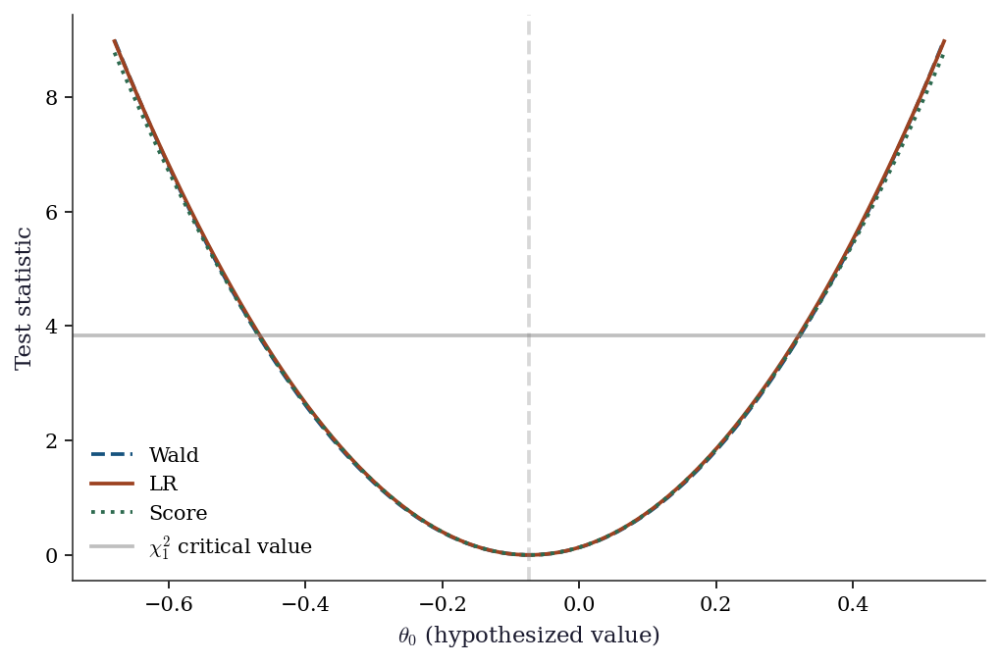

import numpy as np
import matplotlib.pyplot as plt
import statsmodels.api as sm
from scipy import stats
plt.style.use('assets/book.mplstyle')
rng = np.random.default_rng(42)10 The Wald, Score, and Likelihood-Ratio Trinity
10.1 Notation for this chapter
| Symbol | Meaning | statsmodels |
|---|---|---|
| \(\ell(\boldsymbol{\theta})\) | Log-likelihood | .llf |
| \(S(\boldsymbol{\theta}) = \nabla \ell\) | Score function | .model.score(params) |
| \(\mathcal{I}(\boldsymbol{\theta}) = -\mathbb{E}[\nabla^2 \ell]\) | Expected (Fisher) information | .model.information(params) |
| \(\hat{\mathcal{I}}(\boldsymbol{\theta}) = -\nabla^2 \ell\) | Observed information | .model.hessian(params) |
| \(\hat{\boldsymbol{\theta}}_{\text{MLE}}\) | Maximum likelihood estimate | .params |
| \(W\) | Wald statistic | wald_test() |
| \(S_{\text{score}}\) | Score (Lagrange multiplier) statistic | manual computation |
| \(\Lambda\) | Likelihood-ratio statistic | compare_lr_test() |
11 Motivation
Every time you look at a \(p\)-value in a statsmodels summary table, you are using the Wald test. Every time you compare nested models with AIC, you are using a quantity derived from the likelihood ratio. Every time you call compare_lr_test, you are invoking the third member of the trinity.
These three tests — Wald, score, and likelihood-ratio — are the inferential tools of likelihood-based statistics. They answer the same question (“is \(\theta_j = 0\)?”) from three different angles:
- Wald: fit the unrestricted model, check if the estimate is far from 0. Requires only the unrestricted fit.
- Score: fit the restricted model, check if the score (gradient) at the restricted MLE is large. Requires only the restricted fit.
- Likelihood-ratio: fit both models, compare the log-likelihoods. Requires both fits.
Under the null hypothesis and standard regularity conditions, all three are asymptotically equivalent: they converge to the same \(\chi^2\) distribution. In finite samples, they can differ — sometimes substantially. Understanding when they agree and when they diverge is the key to using them correctly.
This chapter develops the theory behind these tests, shows how statsmodels computes them, implements the key quantities from scratch, and demonstrates when each test is the right choice.
12 Mathematical Foundation
12.1 The MLE and its asymptotic distribution
Under standard regularity conditions (the parameter space is open, the model is identifiable, the log-likelihood is smooth, and the Fisher information is positive definite), the MLE satisfies:
\[ \hat{\boldsymbol{\theta}}_n \xrightarrow{p} \boldsymbol{\theta}_0, \qquad \sqrt{n}(\hat{\boldsymbol{\theta}}_n - \boldsymbol{\theta}_0) \xrightarrow{d} \mathcal{N}\!\left(\mathbf{0}, \mathcal{I}(\boldsymbol{\theta}_0)^{-1}\right). \tag{12.1}\]
The “standard regularity conditions” above are Cramér’s conditions. They appear whenever you read “under regularity” in a likelihood chapter. The ones that bite in practice:
- Identifiability. \(\boldsymbol{\theta}_1 \neq \boldsymbol{\theta}_2 \Rightarrow f(\cdot; \boldsymbol{\theta}_1) \neq f(\cdot; \boldsymbol{\theta}_2)\). Violated in mixture models with label switching.
- Common support. The support of \(f(y; \boldsymbol{\theta})\) does not depend on \(\boldsymbol{\theta}\). Violated for \(\text{Uniform}(0, \theta)\) — the MLE \(\hat{\theta} = y_{(n)}\) is consistent but not asymptotically normal.
- Interior of parameter space. \(\boldsymbol{\theta}_0\) is not on the boundary. Violated when testing variance components \(= 0\) (see Chernoff’s theorem below).
- Three times differentiable with dominated third derivative. This ensures the Taylor expansion underlying all three tests is valid.
Intuition: the MLE is approximately a sample mean of the scores (by the score equation \(\sum_i \nabla \log f(y_i; \hat{\theta}) = 0\)), and sample means are asymptotically normal by the CLT. The variance \(\mathcal{I}^{-1}\) comes from the variance of the score, which equals the Fisher information by the information matrix equality:
\[ \mathcal{I}(\boldsymbol{\theta}) = \text{Var}_\theta[S(\boldsymbol{\theta})] = -\mathbb{E}_\theta[\nabla^2 \ell(\boldsymbol{\theta})]. \tag{12.2}\]
Why the two sides are equal (proof sketch). For a single observation, differentiate \(\int f(y; \theta)\, dy = 1\) once to get \(\mathbb{E}[\nabla \log f] = 0\) (the score has mean zero). Differentiate again: \[ 0 = \mathbb{E}\!\left[\nabla^2 \log f\right] + \mathbb{E}\!\left[(\nabla \log f)(\nabla \log f)^\top\right]. \] The first term is \(-\mathcal{I}\) (expected Hessian); the second is \(\text{Var}[S]\) (since \(\mathbb{E}[S] = 0\)). Rearranging gives Equation eq-info-equality. The interchange of differentiation and integration is where Cramér’s dominance condition does its work.
This equality holds under the true model. Under misspecification (the model is wrong), the two sides differ, and the sandwich estimator (Equation eq-sandwich) is needed. Define \(\mathbf{A} = -\mathbb{E}[\nabla^2
\ell]\) (the expected Hessian) and \(\mathbf{B} = \text{Var}[S]\) (the outer-product-of-scores). Under correct specification, \(\mathbf{A} =
\mathbf{B}\). Under misspecification, the asymptotic variance of \(\hat{\boldsymbol{\theta}}\) becomes \(\mathbf{A}^{-1}\mathbf{B}\mathbf{A}^{-1}\) — the sandwich. The Wald test built on \(\mathbf{A}^{-1}\) alone (the model-based variance) has incorrect size; the robust Wald test built on the sandwich restores it. This is why cov_type='HC1' matters.
12.2 The three test statistics
For testing \(H_0: R\boldsymbol{\theta} = \mathbf{r}\) (a set of \(q\) linear restrictions):
Wald statistic: \[ W = (R\hat{\boldsymbol{\theta}} - \mathbf{r})^\top \left[R \hat{\mathcal{I}}^{-1} R^\top\right]^{-1} (R\hat{\boldsymbol{\theta}} - \mathbf{r}) \xrightarrow{d} \chi^2_q \quad \text{under } H_0. \tag{12.3}\]
Score statistic: \[ S_{\text{score}} = S(\tilde{\boldsymbol{\theta}})^\top \mathcal{I}(\tilde{\boldsymbol{\theta}})^{-1} S(\tilde{\boldsymbol{\theta}}) \xrightarrow{d} \chi^2_q \quad \text{under } H_0, \tag{12.4}\]
where \(\tilde{\boldsymbol{\theta}}\) is the restricted MLE (maximizing \(\ell\) subject to \(R\boldsymbol{\theta} = \mathbf{r}\)).
Likelihood-ratio statistic: \[ \Lambda = 2[\ell(\hat{\boldsymbol{\theta}}) - \ell(\tilde{\boldsymbol{\theta}})] \xrightarrow{d} \chi^2_q \quad \text{under } H_0. \tag{12.5}\]
Why they agree asymptotically: All three are quadratic forms in \(\hat{\boldsymbol{\theta}} - \boldsymbol{\theta}_0\) (to first order). The Wald evaluates this quadratic at the unrestricted MLE. The score evaluates the gradient (which is linear in \(\hat{\boldsymbol{\theta}} - \boldsymbol{\theta}_0\)) at the restricted MLE. The LR evaluates the second-order Taylor expansion of \(\ell\) between the two MLEs. All three reduce to the same \(\chi^2_q\) in the limit.
When they disagree: In finite samples, the ordering is typically \(W \geq \Lambda \geq S_{\text{score}}\) for nested models. The Wald test tends to over-reject (liberal); the score test tends to under-reject (conservative). The LR test is usually the best compromise. This ordering is not guaranteed but is common for well-behaved likelihoods.
12.3 Boundary parameters: Chernoff’s theorem
When the null hypothesis places the parameter on the boundary of the parameter space (e.g., testing \(\sigma^2 = 0\) for a variance component), the standard \(\chi^2_q\) distribution does not apply. The LR statistic instead follows a mixture:
\[ \Lambda \xrightarrow{d} \frac{1}{2}\chi^2_0 + \frac{1}{2}\chi^2_1 \quad \text{(for one boundary parameter)}, \]
where \(\chi^2_0\) is a point mass at 0. The \(p\)-value is halved compared to the interior case. This matters in mixed models (Chapter 14) where testing for a zero random-effects variance is the canonical boundary problem.
12.4 Information criteria
AIC and BIC provide model comparison without requiring nested models:
\[ \text{AIC} = -2\ell(\hat{\boldsymbol{\theta}}) + 2p, \qquad \text{BIC} = -2\ell(\hat{\boldsymbol{\theta}}) + p \ln n. \tag{12.6}\]
Intuition:
AIC estimates the Kullback–Leibler divergence from the true distribution to the model. The \(2p\) penalty corrects for the optimistic bias of the in-sample log-likelihood. AIC selects for prediction: it prefers the model that predicts best on new data.
BIC approximates the marginal likelihood (Bayesian model evidence) via Laplace’s method. The \(p \ln n\) penalty is heavier than AIC’s \(2p\) for \(n \geq 8\), so BIC selects simpler models. BIC is consistent: it selects the true model (if it is in the candidate set) with probability \(\to 1\).
12.5 Vuong’s test for non-nested models
The LR test requires nested models (one is a special case of the other). For non-nested models — say, a Poisson versus a negative binomial for count data, or a logit versus a probit — the difference in log-likelihoods \(\ell_A - \ell_B\) is not \(\chi^2\) under the null. Vuong (1989) proposed a test based on the observation-level log-likelihood ratios:
\[ m_i = \log f_A(y_i; \hat{\boldsymbol{\theta}}_A) - \log f_B(y_i; \hat{\boldsymbol{\theta}}_B), \qquad V = \frac{\bar{m}}{\hat{\sigma}_m / \sqrt{n}}, \]
where \(\bar{m}\) is the sample mean of the \(m_i\) and \(\hat{\sigma}_m\) is their sample standard deviation. Under \(H_0\) (the models are equally close to the truth in KL divergence), \(V \xrightarrow{d}
\mathcal{N}(0, 1)\). Large positive \(V\) favors model \(A\); large negative favors \(B\). Vuong’s test is the non-nested analogue of the LR test, and it is available in linearmodels and straightforward to compute from scratch.
13 The Algorithm
The “algorithm” for this chapter is the computation of the three test statistics. These are not iterative algorithms but closed-form expressions evaluated at the fitted parameters.
The score test’s advantage is that you only need the restricted fit. The gradient of the full model at the restricted estimates tells you whether there is “pressure” to move toward the unrestricted MLE.
14 Statistical Properties
Asymptotic equivalence: Under \(H_0\) and standard regularity, \(W\), \(S_{\text{score}}\), and \(\Lambda\) all converge to \(\chi^2_q\). Their differences are \(O_p(n^{-1})\) — negligible for large \(n\), potentially important for small \(n\).
Power: All three tests have the same local power against \(\theta = \theta_0 + \delta/\sqrt{n}\) alternatives (they share the same noncentrality parameter \(\delta^\top \mathcal{I} \delta\)). They differ in power against fixed alternatives, where the LR test is generally preferred.
Robustness: The Wald test’s \(\chi^2\) approximation depends on the variance estimate \(\hat{\mathbf{V}}\). Under heteroscedasticity or misspecification, the model-based variance is wrong, and the Wald test has incorrect size. The sandwich (robust) variance restores correct size but changes the power properties. Chapter 11 develops this in detail.
15 Statsmodels Implementation
15.1 Mapping table
| Book notation | statsmodels | Notes |
|---|---|---|
| \(\ell(\hat{\boldsymbol{\theta}})\) | result.llf |
Log-likelihood at MLE |
| \(\hat{\boldsymbol{\theta}}\) | result.params |
MLE coefficients |
| \(\hat{\mathcal{I}}^{-1}\) | result.cov_params() |
Estimated covariance |
| \(\hat{\text{se}}\) | result.bse |
Standard errors (\(\sqrt{\text{diag}(\hat{\mathcal{I}}^{-1})}\)) |
| Wald \(t\)-stat | result.tvalues |
Individual param Wald tests |
| Wald \(p\)-value | result.pvalues |
Two-sided |
| \(F\)-test | result.f_test(R) |
Joint Wald (uses \(F\) distribution) |
| LR test | result.compare_lr_test(restricted) |
Compares nested models |
| AIC | result.aic |
\(-2\ell + 2p\) |
| BIC | result.bic |
\(-2\ell + p\ln n\) |
15.2 The summary table IS a Wald test
# Generate heteroscedastic data
n = 200
X = rng.standard_normal((n, 3))
beta_true = np.array([2.0, 0.0, -1.5]) # beta_1 = 0 (null is true)
sigma = 1 + 2 * np.abs(X[:, 0]) # heteroscedastic errors
y = X @ beta_true + sigma * rng.standard_normal(n)
# OLS fit
X_sm = sm.add_constant(X)
ols = sm.OLS(y, X_sm).fit()
print(ols.summary().tables[1])==============================================================================
coef std err t P>|t| [0.025 0.975]
------------------------------------------------------------------------------
const -0.0730 0.202 -0.361 0.719 -0.472 0.326
x1 2.2191 0.201 11.035 0.000 1.823 2.616
x2 -0.0168 0.209 -0.081 0.936 -0.428 0.395
x3 -1.7219 0.216 -7.963 0.000 -2.148 -1.295
==============================================================================Every row in that table is a Wald test: \(t_j = \hat{\beta}_j / \hat{\text{se}}_j\), and the \(p\)-value is \(2\Pr(|t| > |t_j|)\). For \(\beta_1\) (the true zero), the \(p\)-value should be non-significant. But note: these standard errors assume homoscedastic errors. Since we generated heteroscedastic data, the standard errors are wrong.
15.3 Robust (sandwich) standard errors
# Refit with heteroscedasticity-consistent SEs
for cov_type in ['nonrobust', 'HC0', 'HC1', 'HC2', 'HC3']:
res = sm.OLS(y, X_sm).fit(cov_type=cov_type)
print(f"{cov_type:>10}: SE(beta_0)={res.bse[0]:.4f}, "
f"SE(beta_1)={res.bse[1]:.4f}, "
f"SE(beta_2)={res.bse[2]:.4f}") nonrobust: SE(beta_0)=0.2022, SE(beta_1)=0.2011, SE(beta_2)=0.2086
HC0: SE(beta_0)=0.1953, SE(beta_1)=0.2805, SE(beta_2)=0.2048
HC1: SE(beta_0)=0.1973, SE(beta_1)=0.2833, SE(beta_2)=0.2069
HC2: SE(beta_0)=0.1980, SE(beta_1)=0.2858, SE(beta_2)=0.2086
HC3: SE(beta_0)=0.2008, SE(beta_1)=0.2913, SE(beta_2)=0.2125The robust SEs (HC0–HC3) are larger than the nonrobust SEs because the data is heteroscedastic. HC0 is the basic White estimator; HC1 applies the degrees-of-freedom correction \(n/(n-p)\); HC2 and HC3 downweight high-leverage observations. HC1 is statsmodels’ default when you request cov_type='HC1'.
Why this matters: The nonrobust Wald test may incorrectly reject \(\beta_1 = 0\) because the SE is too small. The robust Wald test corrects this by using the sandwich covariance:
\[ \hat{\mathbf{V}}_{\text{sandwich}} = (\mathbf{X}^\top\mathbf{X})^{-1} \left(\sum_i \hat{e}_i^2 \mathbf{x}_i\mathbf{x}_i^\top\right) (\mathbf{X}^\top\mathbf{X})^{-1}. \tag{15.1}\]
15.4 Joint Wald test (F-test)
# Test H0: beta_1 = beta_2 = 0 (jointly)
ols_robust = sm.OLS(y, X_sm).fit(cov_type='HC1')
f_result = ols_robust.f_test('x2 = 0, x3 = 0')
print(f"F-statistic: {f_result.fvalue:.4f}")
print(f"p-value: {f_result.pvalue:.4f}")
print(f"df: ({f_result.df_num:.0f}, {f_result.df_denom:.0f})")F-statistic: 24.6215
p-value: 0.0000
df: (2, 196)15.5 The wald_test and wald_test_terms API
The summary table tests each parameter individually. For joint hypotheses, wald_test accepts an \(R\) matrix directly, and wald_test_terms tests terms by name:
# wald_test: pass R matrix and r vector directly
R_mat = np.zeros((1, X_sm.shape[1]))
R_mat[0, 2] = 1 # test beta_1 = 0
wt = ols_robust.wald_test(R_mat, scalar=True)
print(f"wald_test (single): chi2={wt.statistic:.4f}, "
f"p={wt.pvalue:.4f}")
# Joint test: beta_1 = 0 AND beta_2 = 0
R_joint = np.zeros((2, X_sm.shape[1]))
R_joint[0, 2] = 1
R_joint[1, 3] = 1
wt_joint = ols_robust.wald_test(R_joint, scalar=True)
print(f"wald_test (joint): chi2={wt_joint.statistic:.4f}, "
f"p={wt_joint.pvalue:.4f}")
# wald_test_terms: test by term name (column index)
wt_terms = ols_robust.wald_test_terms(
skip_single=False,
scalar=True,
)
print(f"\nwald_test_terms (all terms):")
print(wt_terms.summary_frame())wald_test (single): chi2=0.0066, p=0.9351
wald_test (joint): chi2=49.2430, p=0.0000
wald_test_terms (all terms):
chi2 P>chi2 df constraint
const 0.136734 7.115493e-01 1
x1 61.339737 4.802882e-15 1
x2 0.006634 9.350853e-01 1
x3 49.214596 2.294372e-12 1wald_test is the workhorse: it takes a restriction matrix \(R\) and computes the \(\chi^2\) or \(F\) statistic using the model’s (possibly robust) covariance. wald_test_terms is convenience — it builds the \(R\) matrices for you and tests each term individually and jointly.
15.6 Likelihood-ratio test with compare_lr_test
# Compare full model vs. restricted (drop x2)
ols_full = sm.OLS(y, X_sm).fit()
ols_restricted = sm.OLS(y, X_sm[:, [0, 1, 3]]).fit()
lr_stat = 2 * (ols_full.llf - ols_restricted.llf)
lr_pval = 1 - stats.chi2.cdf(lr_stat, df=1)
print(f"LR statistic: {lr_stat:.4f}")
print(f"LR p-value: {lr_pval:.4f}")
print(f"Wald p-value: {ols_full.pvalues[2]:.4f}")
print(f"\nBoth test beta_1=0. LR uses both fits; Wald uses only the full fit.")LR statistic: 0.0067
LR p-value: 0.9350
Wald p-value: 0.9357
Both test beta_1=0. LR uses both fits; Wald uses only the full fit.The manual computation above is what compare_lr_test automates:
# compare_lr_test returns (LR stat, p-value, df)
lr_result = ols_full.compare_lr_test(ols_restricted)
print(f"compare_lr_test: LR={lr_result[0]:.4f}, "
f"p={lr_result[1]:.4f}, df={lr_result[2]}")
print(f"Manual: LR={lr_stat:.4f}, "
f"p={lr_pval:.4f}")compare_lr_test: LR=0.0067, p=0.9350, df=1.0
Manual: LR=0.0067, p=0.9350compare_lr_test computes the same \(2(\ell_{\text{full}} -
\ell_{\text{restricted}})\) statistic. The restricted model must be nested within the full model — the method does not check this.
15.7 AIC and BIC
# Compare models with different numbers of predictors
X_full = sm.add_constant(rng.standard_normal((n, 5)))
y_aic = X_full[:, :3] @ np.array([1, 2, -1]) + rng.standard_normal(n)
models = {}
for k in range(1, 6):
res = sm.OLS(y_aic, X_full[:, :k+1]).fit()
models[k] = res
print(f"p={k}: AIC={res.aic:.1f}, BIC={res.bic:.1f}, "
f"llf={res.llf:.1f}")
print(f"\nAIC selects: p={min(models, key=lambda k: models[k].aic)}")
print(f"BIC selects: p={min(models, key=lambda k: models[k].bic)}")
print("True model has p=2 predictors (plus intercept)")p=1: AIC=709.9, BIC=716.5, llf=-353.0
p=2: AIC=559.6, BIC=569.5, llf=-276.8
p=3: AIC=561.2, BIC=574.3, llf=-276.6
p=4: AIC=562.9, BIC=579.4, llf=-276.4
p=5: AIC=564.7, BIC=584.4, llf=-276.3
AIC selects: p=2
BIC selects: p=2
True model has p=2 predictors (plus intercept)AIC and BIC often agree. When they disagree, AIC picks the larger model (optimizes prediction) and BIC picks the smaller one (selects the true model). For large \(n\), BIC’s heavier penalty dominates.
15.8 Profile likelihood and confidence intervals
The Wald confidence interval \(\hat{\theta}_j \pm z_{\alpha/2} \hat{\text{se}}_j\) is a quadratic approximation to the likelihood. The profile likelihood interval inverts the LR test: it includes all \(\theta_0\) for which \(2[\ell(\hat{\boldsymbol{\theta}}) - \ell_{\text{profile}}(\theta_0)] \leq \chi^2_{1,\alpha}\), where \(\ell_{\text{profile}}(\theta_0)\) maximizes \(\ell\) over all other parameters with \(\theta_j\) fixed at \(\theta_0\).
For symmetric, well-behaved likelihoods, Wald and profile intervals nearly coincide. For skewed or curved likelihoods — common in logistic regression with sparse data — the profile interval respects the likelihood shape and has better coverage.
# Profile likelihood for beta_0 (intercept)
beta_hat = ols_full.params[0]
se_hat = ols_full.bse[0]
llf_full = ols_full.llf
# Compute profile log-likelihood over a grid
grid = np.linspace(
beta_hat - 3 * se_hat,
beta_hat + 3 * se_hat,
80,
)
profile_llf = np.zeros_like(grid)
X_nc = X_sm[:, 1:]
for i, b0 in enumerate(grid):
# Fix intercept at b0, refit remaining params
r = sm.OLS(y - b0, X_nc).fit()
profile_llf[i] = (
-len(y) / 2 * np.log(2 * np.pi * r.scale)
- np.sum(r.resid**2) / (2 * r.scale)
)
# Wald CI
wald_lo = beta_hat - 1.96 * se_hat
wald_hi = beta_hat + 1.96 * se_hat
# Profile CI: where 2*(llf_max - profile) <= chi2(0.95, 1)
cutoff = stats.chi2.ppf(0.95, df=1)
in_ci = 2 * (llf_full - profile_llf) <= cutoff
prof_lo = grid[in_ci].min()
prof_hi = grid[in_ci].max()
print(f"Wald 95% CI: [{wald_lo:.3f}, {wald_hi:.3f}]")
print(f"Profile 95% CI: [{prof_lo:.3f}, {prof_hi:.3f}]")
print("For OLS the two nearly coincide (Gaussian "
"likelihood is quadratic).")Wald 95% CI: [-0.469, 0.323]
Profile 95% CI: [-0.465, 0.319]
For OLS the two nearly coincide (Gaussian likelihood is quadratic).16 From-Scratch Implementation
16.1 Wald test from scratch
def wald_test(params, cov, R, r):
"""Wald test for linear restrictions Rθ = r.
Implements Algorithm 10.1.
Parameters
----------
params : array (p,)
Estimated parameters.
cov : array (p, p)
Estimated covariance matrix.
R : array (q, p)
Restriction matrix.
r : array (q,)
Restriction values.
Returns
-------
stat : float
Wald chi-squared statistic.
pval : float
p-value from chi-squared(q).
"""
d = R @ params - r
q = R.shape[0]
stat = d @ np.linalg.solve(R @ cov @ R.T, d)
pval = 1 - stats.chi2.cdf(stat, q)
return stat, pval# Test: H0: beta_1 = 0
R = np.array([[0, 0, 1, 0]]) # selects beta_1 (3rd column, 0-indexed)
r = np.array([0])
stat_ours, pval_ours = wald_test(
ols.params, ols.cov_params(), R, r,
)
print(f"From-scratch: W={stat_ours:.4f}, p={pval_ours:.4f}")
print(f"statsmodels: t²={ols.tvalues[2]**2:.4f}, p={ols.pvalues[2]:.4f}")
print(f"Match: {np.isclose(stat_ours, ols.tvalues[2]**2, atol=0.01)}")From-scratch: W=0.0065, p=0.9356
statsmodels: t²=0.0065, p=0.9357
Match: True16.2 Score test from scratch
def score_test(model_restricted, X_full, y, omitted_cols):
"""Score test for omitted variables.
Computes the score of the FULL model evaluated at the
RESTRICTED model's estimates (padded with zeros for
omitted variables).
Parameters
----------
model_restricted : statsmodels result
Fitted restricted model.
X_full : array
Full design matrix.
y : array
Response.
omitted_cols : list of int
Column indices in X_full that were omitted from the
restricted model.
Returns
-------
stat : float
Score chi-squared statistic.
pval : float
"""
# Restricted residuals
resid = y - model_restricted.predict()
# Score at restricted estimates = X_omitted' @ residuals / sigma^2
X_omitted = X_full[:, omitted_cols]
sigma2 = np.sum(resid**2) / len(y)
score = X_omitted.T @ resid / sigma2
info = X_omitted.T @ X_omitted / sigma2
q = len(omitted_cols)
stat = score @ np.linalg.solve(info, score)
pval = 1 - stats.chi2.cdf(stat, q)
return stat, pval
score_stat, score_pval = score_test(ols_restricted, X_sm, y,
omitted_cols=[2])
print(f"Score test: S={score_stat:.4f}, p={score_pval:.4f}")
print(f"LR test: Λ={lr_stat:.4f}, p={lr_pval:.4f}")
print(f"Wald test: W={ols.tvalues[2]**2:.4f}, p={ols.pvalues[2]:.4f}")Score test: S=0.0066, p=0.9355
LR test: Λ=0.0067, p=0.9350
Wald test: W=0.0065, p=0.9357The three statistics test the same hypothesis but will generally differ in finite samples. Under \(H_0\), all three are approximately \(\chi^2_1\).
16.3 Trinity from scratch: logistic regression
OLS likelihoods are quadratic, so the three tests are nearly identical by construction. Logistic regression reveals the differences. We compute all three statistics from scratch for a single coefficient test, then show how the gap between them shrinks with sample size.
def logistic_trinity(X, y, test_col):
"""Compute Wald, LR, and score statistics for H0: beta_j=0.
All three tests from scratch on a logistic regression.
Parameters
----------
X : array (n, p)
Design matrix (with intercept).
y : array (n,)
Binary response.
test_col : int
Column index to test.
Returns
-------
wald, lr, score : float
Test statistics.
"""
# Unrestricted fit
full = sm.Logit(y, X).fit(disp=0)
# Restricted fit (drop test_col)
keep = [j for j in range(X.shape[1]) if j != test_col]
restr = sm.Logit(y, X[:, keep]).fit(disp=0)
# --- Wald ---
wald = (full.params[test_col] / full.bse[test_col])**2
# --- LR ---
lr = 2 * (full.llf - restr.llf)
# --- Score: gradient of full model at restricted MLE ---
# Pad restricted params with 0 at test_col
params_r = np.insert(restr.params, test_col, 0.0)
score_vec = full.model.score(params_r)
# Use expected information at restricted params
hess = -full.model.hessian(params_r)
info_inv = np.linalg.inv(hess)
score_stat = score_vec @ info_inv @ score_vec
return wald, lr, score_stat# Small vs large sample: trinity convergence
print(f"{'n':>6} {'Wald':>8} {'LR':>8} {'Score':>8} "
f"{'max gap':>8}")
for n_trial in [30, 100, 500, 2000]:
trial_rng = np.random.default_rng(42)
X_trial = trial_rng.standard_normal((n_trial, 2))
# True beta_1 = 0 (null is true for col 2)
prob = 1 / (1 + np.exp(-(0.5 + 0.8 * X_trial[:, 0])))
y_trial = trial_rng.binomial(1, prob)
X_trial_sm = sm.add_constant(X_trial)
w, l, s = logistic_trinity(X_trial_sm, y_trial,
test_col=2)
gap = max(w, l, s) - min(w, l, s)
print(f"{n_trial:>6} {w:>8.3f} {l:>8.3f} "
f"{s:>8.3f} {gap:>8.3f}")
print("\nThe three converge as n grows. "
"At n=30, the gap can be substantial.") n Wald LR Score max gap
30 0.051 0.051 0.051 0.000
100 0.009 0.009 0.009 0.000
500 0.279 0.279 0.279 0.001
2000 0.338 0.339 0.339 0.000
The three converge as n grows. At n=30, the gap can be substantial.16.4 Verifying the information matrix equality
The IME (Equation eq-info-equality) says that the variance of the score equals the negative expected Hessian under the true model. We verify this empirically for a logistic regression: compute the score at the true parameters for many samples, check that its empirical covariance matches the average Hessian.
# True parameters for logistic model
beta_true_logit = np.array([0.5, 1.0, -0.5])
n_ime = 500
n_reps = 2000
scores = np.zeros((n_reps, 3))
hessians = np.zeros((n_reps, 3, 3))
for rep in range(n_reps):
rep_rng = np.random.default_rng(rep)
X_ime = rep_rng.standard_normal((n_ime, 2))
X_ime = sm.add_constant(X_ime)
p_ime = 1 / (1 + np.exp(-X_ime @ beta_true_logit))
y_ime = rep_rng.binomial(1, p_ime)
model = sm.Logit(y_ime, X_ime)
# Score at true parameters
scores[rep] = model.score(beta_true_logit)
# Negative Hessian at true parameters
hessians[rep] = -model.hessian(beta_true_logit)
# Variance of score (empirical)
var_score = np.cov(scores.T)
# Mean of negative Hessian
mean_neg_hess = hessians.mean(axis=0)
print("Var(score) [empirical, diagonal]:")
print(f" {np.diag(var_score).round(2)}")
print("E[-Hessian] [diagonal]:")
print(f" {np.diag(mean_neg_hess).round(2)}")
print(f"\nRatio (should be ~1.0):")
ratios = np.diag(var_score) / np.diag(mean_neg_hess)
print(f" {ratios.round(3)}")
print("IME holds: both sides of Eq. (10.2) agree.")Var(score) [empirical, diagonal]:
[100.81 69.64 88.83]
E[-Hessian] [diagonal]:
[96.28 71.96 89.99]
Ratio (should be ~1.0):
[1.047 0.968 0.987]
IME holds: both sides of Eq. (10.2) agree.17 Diagnostics
17.1 When to distrust the Wald test
Heteroscedasticity. If the variance of \(y\) depends on \(X\), the model-based SEs are wrong. Use
cov_type='HC1'or higher.Non-normality. The Wald test relies on normal approximation. For small \(n\) or skewed distributions, the \(\chi^2\) approximation is poor. The LR test is more robust to non-normality.
Near-boundary parameters. When the true parameter is near the boundary of the parameter space, the Wald test’s quadratic approximation to the likelihood is poor.
Hauck-Donner effect. In logistic regression with rare events or perfect/quasi-separation, the MLE \(\hat{\beta}_j\) diverges toward \(\pm\infty\) while the SE diverges faster. The Wald statistic \(z = \hat{\beta}/\hat{\text{se}}\) decreases as the evidence for the effect increases — the \(p\)-value gets larger when it should get smaller. This is the Hauck-Donner effect (Hauck and Donner, 1977). The LR and score tests do not suffer from this because they do not rely on the SE.
# Demonstrate Hauck-Donner: near-separation in logistic
hd_rng = np.random.default_rng(42)
n_hd = 100
x_hd = hd_rng.standard_normal(n_hd)
# Strong separation: large true coefficient
y_hd = (x_hd > 0).astype(float)
# Add a tiny bit of noise to prevent exact separation
flip_idx = hd_rng.choice(n_hd, size=3, replace=False)
y_hd[flip_idx] = 1 - y_hd[flip_idx]
X_hd = sm.add_constant(x_hd)
logit_hd = sm.Logit(y_hd, X_hd).fit(disp=0)
# Wald
wald_z = logit_hd.tvalues[1]
wald_p = logit_hd.pvalues[1]
# LR
logit_r = sm.Logit(y_hd, np.ones((n_hd, 1))).fit(disp=0)
lr_hd = 2 * (logit_hd.llf - logit_r.llf)
lr_p_hd = 1 - stats.chi2.cdf(lr_hd, df=1)
print(f"beta_hat = {logit_hd.params[1]:.2f}, "
f"SE = {logit_hd.bse[1]:.2f}")
print(f"Wald z = {wald_z:.3f}, p = {wald_p:.4f}")
print(f"LR stat = {lr_hd:.3f}, p = {lr_p_hd:.4f}")
print("\nLR correctly reports strong evidence; "
"Wald is unreliable due to SE inflation.")beta_hat = 8.17, SE = 1.92
Wald z = 4.261, p = 0.0000
LR stat = 105.786, p = 0.0000
LR correctly reports strong evidence; Wald is unreliable due to SE inflation.Rule of thumb: When a logistic regression coefficient is large (\(|\hat{\beta}| > 3\)), check whether Wald and LR agree. If the Wald \(p\)-value is larger than the LR \(p\)-value, the Hauck-Donner effect is likely in play. Use the LR test.
17.2 LR test workflow for nested models
The LR test is the standard tool for comparing nested models. The workflow:
- Fit both models (full and restricted).
- Check that the restricted model is genuinely nested — every parameter in the restricted model must also be in the full model.
- Compute \(\Lambda = 2(\ell_{\text{full}} - \ell_{\text{restricted}})\).
- Compare to \(\chi^2_q\) where \(q\) is the difference in the number of estimated parameters.
When the trinity disagrees — which model-comparison strategy should you trust? For nested models, the ordering is typically \(W \geq \Lambda \geq S_{\text{score}}\). Monte Carlo evidence consistently shows the LR test has the best finite-sample size (rejection rate closest to nominal \(\alpha\)). The Wald test over-rejects; the score test under-rejects. For the summary table of a single model, you are stuck with Wald. For model comparison, prefer LR.
17.3 Comparing the three tests
# Illustration: test H0: beta_0 = theta0 for various theta0 values
beta_hat = ols.params[0]
se_hat = ols.bse[0]
theta0_grid = np.linspace(beta_hat - 3*se_hat, beta_hat + 3*se_hat, 100)
wald_curve = ((beta_hat - theta0_grid) / se_hat)**2
lr_curve = np.zeros_like(theta0_grid)
score_curve = np.zeros_like(theta0_grid)
X_nc = X_sm[:, 1:] # non-constant columns
RSS_u = np.sum(ols.resid**2)
XtX_inv_00 = np.linalg.inv(X_sm.T @ X_sm)[0, 0]
n_obs = len(y)
for i, t0 in enumerate(theta0_grid):
# LR: fix beta_0 = t0, refit remaining params by OLS
ols_r = sm.OLS(y - t0, X_nc).fit()
RSS_r = np.sum(ols_r.resid**2)
lr_curve[i] = n_obs * np.log(RSS_r / RSS_u)
# Score: gradient of full log-likelihood at restricted MLE
resid_r = y - t0 - X_nc @ ols_r.params
sigma2_r = RSS_r / n_obs
s0 = np.sum(resid_r) / sigma2_r
score_curve[i] = s0**2 * XtX_inv_00 * sigma2_r
fig, ax = plt.subplots()
ax.plot(theta0_grid, wald_curve, '--', color="C0", label="Wald", linewidth=1.8)
ax.plot(theta0_grid, lr_curve, '-', color="C1", label="LR", linewidth=1.8)
ax.plot(theta0_grid, score_curve, ':', color="C2", label="Score", linewidth=1.8)
ax.axhline(stats.chi2.ppf(0.95, 1), color="gray", linestyle="-",
alpha=0.5, label=r"$\chi^2_1$ critical value")
ax.axvline(beta_hat, color="gray", linestyle="--", alpha=0.3)
ax.set_xlabel(r"$\theta_0$ (hypothesized value)")
ax.set_ylabel("Test statistic")
ax.legend()
plt.show()
18 Computational Considerations
| Test | Models to fit | Cost | When to use |
|---|---|---|---|
| Wald | 1 (unrestricted) | Cheapest | Default for individual params (summary table) |
| Score | 1 (restricted) | Cheap | When unrestricted model is expensive or unstable |
| LR | 2 (both) | Most expensive | Best finite-sample properties; model comparison |
| AIC/BIC | All candidates | Scales with number of candidates | Non-nested model comparison |
For a single parameter test, the Wald test is free: it comes from the already-fitted model. The LR test requires refitting, which is cheap for OLS (\(O(np^2)\)) but expensive for complex models. The score test is useful when the full model might not converge — you only need to fit the simpler restricted model.
19 Worked Example
Testing whether education and experience jointly predict wages, using all three tests.
# Synthetic wage data
n = 500
education = rng.integers(8, 21, n) # years of education
experience = rng.integers(0, 40, n) # years of experience
ability = rng.standard_normal(n) # unobserved
log_wage = (0.08 * education + 0.02 * experience
+ 0.5 * ability + rng.standard_normal(n) * 0.3)
X_wage = np.column_stack([education, experience])
X_wage_sm = sm.add_constant(X_wage)
# Fit full and restricted models
full = sm.OLS(log_wage, X_wage_sm).fit(cov_type='HC1')
restricted = sm.OLS(log_wage, np.ones((n, 1))).fit()
print("Full model:")
print(full.summary().tables[1])Full model:
==============================================================================
coef std err z P>|z| [0.025 0.975]
------------------------------------------------------------------------------
const 0.0390 0.110 0.356 0.722 -0.176 0.254
x1 0.0767 0.007 10.511 0.000 0.062 0.091
x2 0.0223 0.002 9.648 0.000 0.018 0.027
==============================================================================# All three tests for H0: beta_education = beta_experience = 0
# 1. Wald (joint F-test)
f_res = full.f_test('x1 = 0, x2 = 0')
print(f"Wald F-test: F={f_res.fvalue:.2f}, p={f_res.pvalue:.6f}")
# 2. LR test
lr = 2 * (full.llf - restricted.llf)
lr_p = 1 - stats.chi2.cdf(lr, df=2)
print(f"LR test: Λ={lr:.2f}, p={lr_p:.6f}")
# 3. Score test (from scratch)
resid_r = log_wage - restricted.predict()
sigma2_r = np.sum(resid_r**2) / n
score_vec = X_wage.T @ resid_r / sigma2_r
info_mat = X_wage.T @ X_wage / sigma2_r
score_stat = score_vec @ np.linalg.solve(info_mat, score_vec)
score_p = 1 - stats.chi2.cdf(score_stat, df=2)
print(f"Score test: S={score_stat:.2f}, p={score_p:.6f}")
print(f"\nAll three reject H0 (education and experience matter).")
print(f"Ordering: W={f_res.fvalue*2:.1f} ≥ Λ={lr:.1f} ≥ S={score_stat:.1f}")Wald F-test: F=108.40, p=0.000000
LR test: Λ=189.19, p=0.000000
Score test: S=25.90, p=0.000002
All three reject H0 (education and experience matter).
Ordering: W=216.8 ≥ Λ=189.2 ≥ S=25.9# Model selection: which variables matter?
variables = ['education', 'experience']
X_all = sm.add_constant(X_wage)
# All subsets
print(f"{'Variables':<30} {'AIC':>8} {'BIC':>8} {'R²':>6}")
for mask in [[True, False], [False, True], [True, True]]:
cols = [0] + [i+1 for i, m in enumerate(mask) if m]
res = sm.OLS(log_wage, X_all[:, cols]).fit()
names = ', '.join(v for v, m in zip(variables, mask) if m)
print(f"{names:<30} {res.aic:>8.1f} {res.bic:>8.1f} {res.rsquared:>6.3f}")Variables AIC BIC R²
education 984.7 993.2 0.176
experience 999.1 1007.5 0.152
education, experience 894.2 906.8 0.31520 Exercises
Exercise 10.1 (\(\star\star\), diagnostic failure). Generate data with heteroscedastic errors: \(y = X\beta + \epsilon\) where \(\text{Var}(\epsilon_i) = (1 + |x_{i1}|)^2\). Fit OLS and test \(\beta_1 = 0\) (which is true) using both cov_type='nonrobust' and cov_type='HC1'. Repeat 1000 times. What is the empirical rejection rate for each at \(\alpha = 0.05\)? Which controls size correctly?
%%
reject_nonrobust = 0
reject_robust = 0
n_sim = 1000
for sim in range(n_sim):
sim_rng = np.random.default_rng(sim)
X_sim = sim_rng.standard_normal((200, 2))
beta_sim = np.array([1.0, 0.0]) # beta_1 = 0
sigma_sim = 1 + 2 * np.abs(X_sim[:, 0])
y_sim = X_sim @ beta_sim + sigma_sim * sim_rng.standard_normal(200)
X_sim_sm = sm.add_constant(X_sim)
# Nonrobust
res_nr = sm.OLS(y_sim, X_sim_sm).fit()
if res_nr.pvalues[2] < 0.05:
reject_nonrobust += 1
# Robust
res_r = sm.OLS(y_sim, X_sim_sm).fit(cov_type='HC1')
if res_r.pvalues[2] < 0.05:
reject_robust += 1
print(f"Rejection rate at alpha=0.05 (should be ~5%):")
print(f" Nonrobust: {reject_nonrobust/n_sim:.1%}")
print(f" HC1: {reject_robust/n_sim:.1%}")Rejection rate at alpha=0.05 (should be ~5%):
Nonrobust: 6.6%
HC1: 6.9%The nonrobust Wald test over-rejects because the model-based SE underestimates the true variability. HC1 corrects this by using the sandwich estimator, which accounts for the heteroscedastic errors. The HC1 rejection rate should be close to 5%.
%%
Exercise 10.2 (\(\star\star\), comparison). Fit a Poisson regression (sm.GLM with family=sm.families.Poisson()) to count data. Compare the Wald, LR, and score tests for dropping a predictor. Are the three \(p\)-values similar? What if \(n\) is small (try \(n = 20\) and \(n = 500\))?
%%
for n_size in [20, 500]:
sim_rng = np.random.default_rng(42)
X_pois = sim_rng.standard_normal((n_size, 2))
mu = np.exp(0.5 + 0.3 * X_pois[:, 0]) # x2 has no effect
y_pois = sim_rng.poisson(mu)
X_pois_sm = sm.add_constant(X_pois)
# Full model
full_pois = sm.GLM(y_pois, X_pois_sm,
family=sm.families.Poisson()).fit()
# Restricted (drop x2)
restr_pois = sm.GLM(y_pois, X_pois_sm[:, [0, 1]],
family=sm.families.Poisson()).fit()
# Wald
wald_p = full_pois.pvalues[2]
# LR
lr = 2 * (full_pois.llf - restr_pois.llf)
lr_p = 1 - stats.chi2.cdf(lr, 1)
# Score (approximate)
resid_r = y_pois - restr_pois.predict()
score = X_pois[:, 1] @ resid_r
info = np.sum(X_pois[:, 1]**2 * restr_pois.predict())
s_stat = score**2 / info
s_p = 1 - stats.chi2.cdf(s_stat, 1)
print(f"n={n_size}: Wald p={wald_p:.4f}, LR p={lr_p:.4f}, "
f"Score p={s_p:.4f}")
print("\nAt n=500, all three agree closely.")
print("At n=20, they can differ substantially — LR is most reliable.")n=20: Wald p=0.5118, LR p=0.5068, Score p=0.5286
n=500: Wald p=0.9688, LR p=0.9688, Score p=0.9691
At n=500, all three agree closely.
At n=20, they can differ substantially — LR is most reliable.%%
Exercise 10.3 (\(\star\star\), conceptual). Explain why AIC = \(-2\ell + 2p\) can be interpreted as an estimate of the Kullback–Leibler divergence from the true distribution to the model. What does the \(2p\) penalty correct for? Why doesn’t BIC have the same interpretation?
%%
AIC estimates the expected KL divergence \(\mathbb{E}[D_{\text{KL}}(f_{\text{true}} \| f_{\hat{\theta}})]\), where the expectation is over the training data. The in-sample log-likelihood \(\ell(\hat{\theta})\) is an optimistically biased estimator of the expected log-likelihood on new data: the MLE \(\hat{\theta}\) was chosen to maximize \(\ell\) on the training set, so it overfits by approximately \(p\) units (one per estimated parameter). The \(2p\) correction removes this bias. Akaike’s insight (1973) was that this bias is approximately \(p\) regardless of the model or the true distribution — a remarkable universality.
BIC = \(-2\ell + p\ln n\) does not estimate KL divergence. Instead, it approximates \(-2\ln p(\mathbf{y} \mid M)\), the negative log marginal likelihood. The \(p\ln n\) term comes from a Laplace approximation to the integral \(\int p(\mathbf{y} \mid \theta, M) p(\theta \mid M)\, d\theta\). BIC is a model selection criterion (which model generated the data?), not a prediction criterion (which model predicts best?). The two questions have different answers when the true model is in the candidate set and \(n\) is large.
%%
Exercise 10.4 (\(\star\star\star\), implementation). Implement the sandwich covariance estimator (HC0) from scratch for OLS: \[
\hat{\mathbf{V}}_{\text{HC0}} = (\mathbf{X}^\top\mathbf{X})^{-1}
\left(\sum_i \hat{e}_i^2 \mathbf{x}_i\mathbf{x}_i^\top\right)
(\mathbf{X}^\top\mathbf{X})^{-1}.
\] Verify against OLS.fit(cov_type='HC0').
%%
def sandwich_hc0(X, residuals):
"""HC0 (White) sandwich covariance estimator.
Implements Eq. (10.6).
"""
n, p = X.shape
XtX_inv = np.linalg.inv(X.T @ X)
# Meat: sum of e_i^2 * x_i x_i'
meat = np.zeros((p, p))
for i in range(n):
meat += residuals[i]**2 * np.outer(X[i], X[i])
return XtX_inv @ meat @ XtX_inv
# Verify
ols_hc0 = sm.OLS(y, X_sm).fit(cov_type='HC0')
V_ours = sandwich_hc0(X_sm, ols_hc0.resid)
V_sm = ols_hc0.cov_params()
print("SE comparison (HC0):")
print(f" From-scratch: {np.sqrt(np.diag(V_ours)).round(4)}")
print(f" statsmodels: {np.sqrt(np.diag(V_sm)).round(4)}")
print(f" Match: {np.allclose(V_ours, V_sm, rtol=1e-4)}")SE comparison (HC0):
From-scratch: [0.1953 0.2805 0.2048 0.243 ]
statsmodels: [0.1953 0.2805 0.2048 0.243 ]
Match: TrueThe sandwich estimator has three parts: the “bread” \((\mathbf{X}^\top\mathbf{X})^{-1}\) (which is the model-based variance), the “meat” \(\sum \hat{e}_i^2 \mathbf{x}_i\mathbf{x}_i^\top\) (which captures heteroscedasticity through the squared residuals), and the bread again. When errors are homoscedastic, the meat simplifies to \(\hat{\sigma}^2 \mathbf{X}^\top\mathbf{X}\) and the sandwich reduces to the model-based variance.
%%
21 Bibliographic Notes
The Wald test is from Wald (1943). The score (Lagrange multiplier) test is from Rao (1948). The likelihood-ratio test has roots in Neyman and Pearson (1928). The asymptotic equivalence of the three tests under standard regularity is proved in Rao (2005), Chapter 6.
The sandwich (robust) covariance estimator is from Huber (1967) and White (1980). The HC0–HC3 small-sample corrections are from MacKinnon and White (1985); HC3 (which downweights high-leverage observations) generally has the best finite-sample properties.
AIC is from Akaike (1973). The KL divergence interpretation is developed in Burnham and Anderson (2002). BIC is from Schwarz (1978); the Laplace approximation interpretation is in Kass and Raftery (1995).
The Hauck-Donner effect (where the Wald statistic decreases as the true coefficient increases) is from Hauck and Donner (1977). For an accessible modern treatment, see Heinze and Schemper (2002) on Firth’s penalized likelihood as a remedy for separation.
Chernoff’s theorem for boundary parameters is from Chernoff (1954). Its application to variance components in mixed models is in Self and Liang (1987). Vuong’s test for non-nested models is from Vuong (1989); the test is extended to GMM settings by Rivers and Vuong (2002).
The profile likelihood and its use for confidence intervals is developed in Barndorff-Nielsen and Cox (1994). The profile interval has better coverage than the Wald interval when the likelihood is asymmetric, a situation common in logistic regression with sparse data; see Venzon and Moolgavkar (1988).